Chronos · mascot · phase 2 · locked
Tock.
A small hourglass creature who works the night shift. Risograph halftone, three inks on a navy ground — and the halftone is built natively from SVG <pattern> fills, so the mark, every pose and the favicon are one system with no raster and no build step.
The character
Sand running is a live run. The level is how far along it is. He flips on a rework round, goes heavy-lidded at 03:07, and ends the night on cream paper.
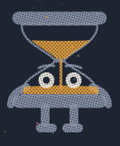
The lockup
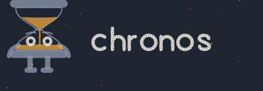
The wordmark is drawn as outlines, so logo.svg renders identically anywhere and needs no font.
Poses
Each one maps to something the daemon actually does. The eyes, lids and brows carry every expression — Tock has no mouth.
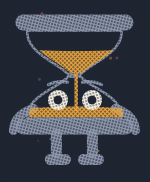
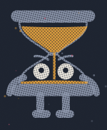
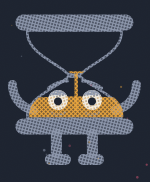
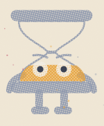
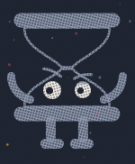
Small & one-colour
A halftone screen cannot survive 16px — it fills in and turns to mud. So favicon.svg is solid ink by design. That is a deliberate exception, and it is written into the usage rules.

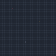
Three inks, two grounds
The whole system. Each ink is screened at its own angle so overlaps moiré like a real separation, and each plate is offset 1–2px for misregistration.
ground night
ground paper
ink slate
ink amber
ink white
misreg. flecks
Generated illustrations
For the landing hero, the 404 and the social card. Every one is conditioned on the hand-built SVG plus the style reference, never prompted from scratch — 16 images, USD 0.6368 of the 5.00 cap. The mark, the favicon and the poses above stay hand-built vector; if a generated image and the SVG ever disagree, the SVG is right.
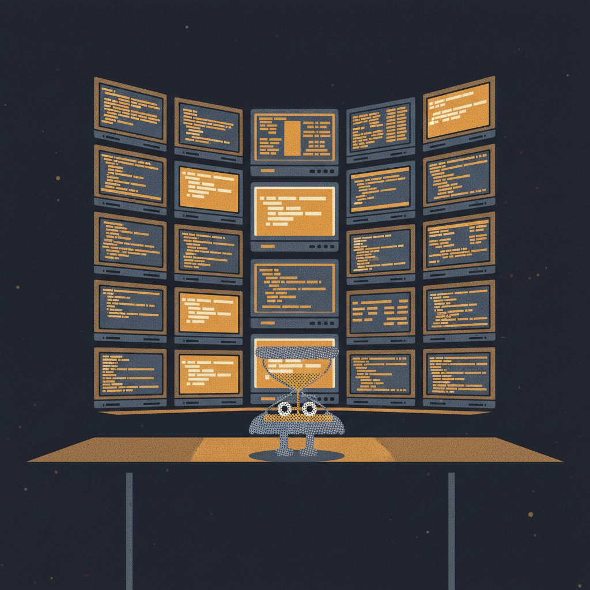
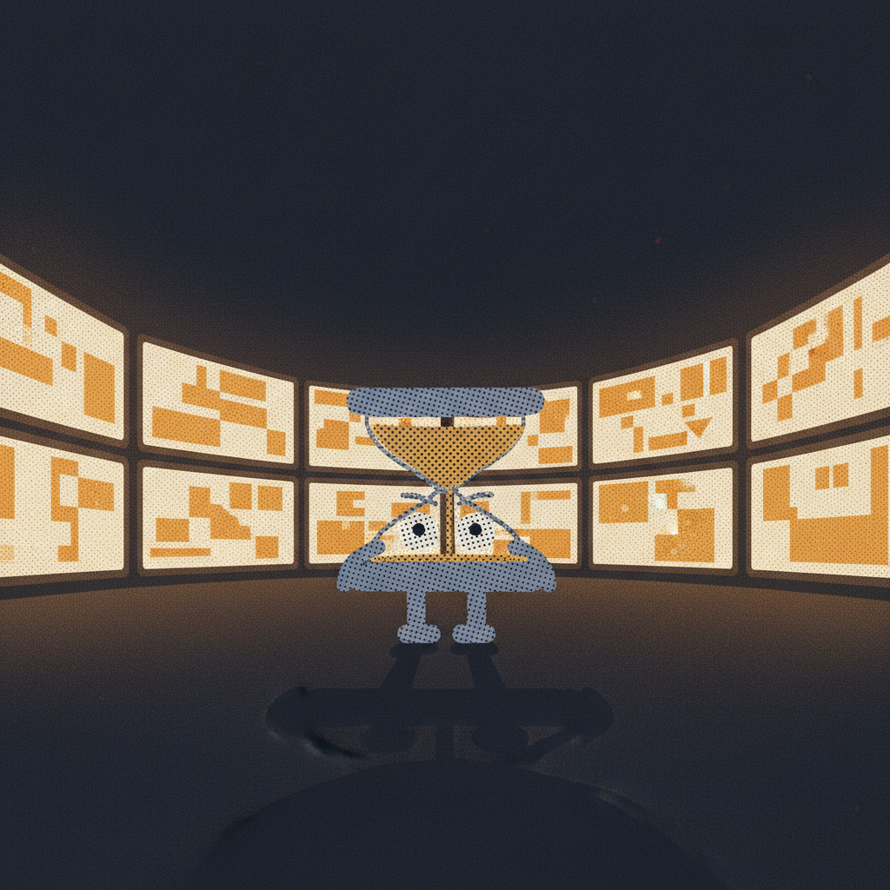
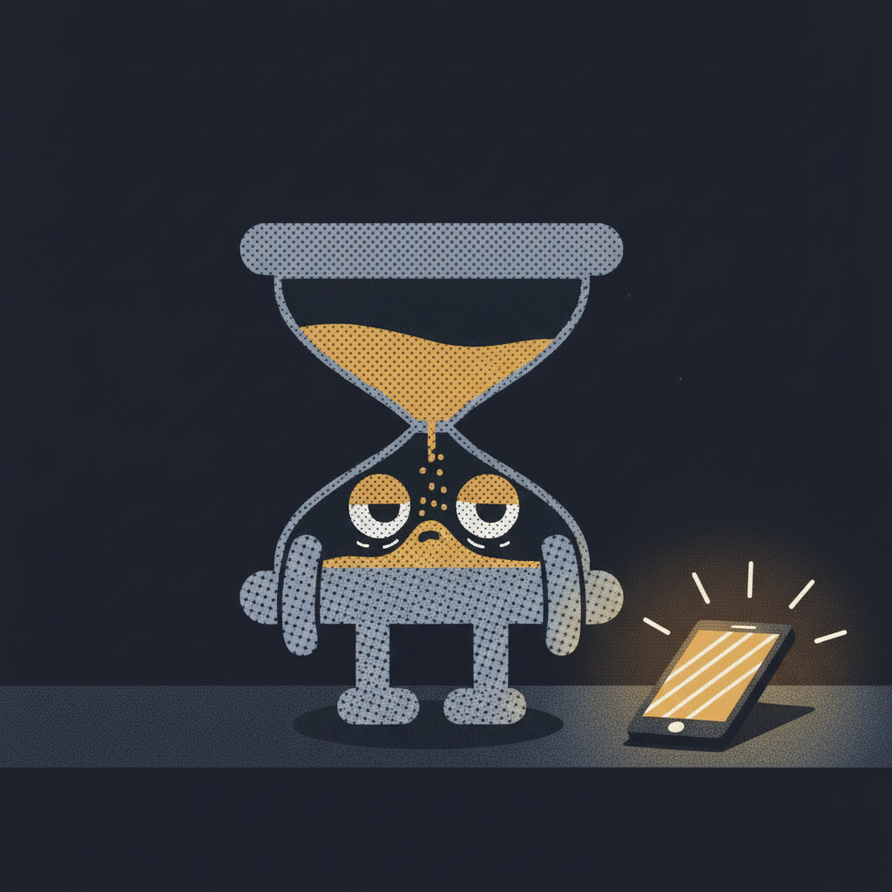
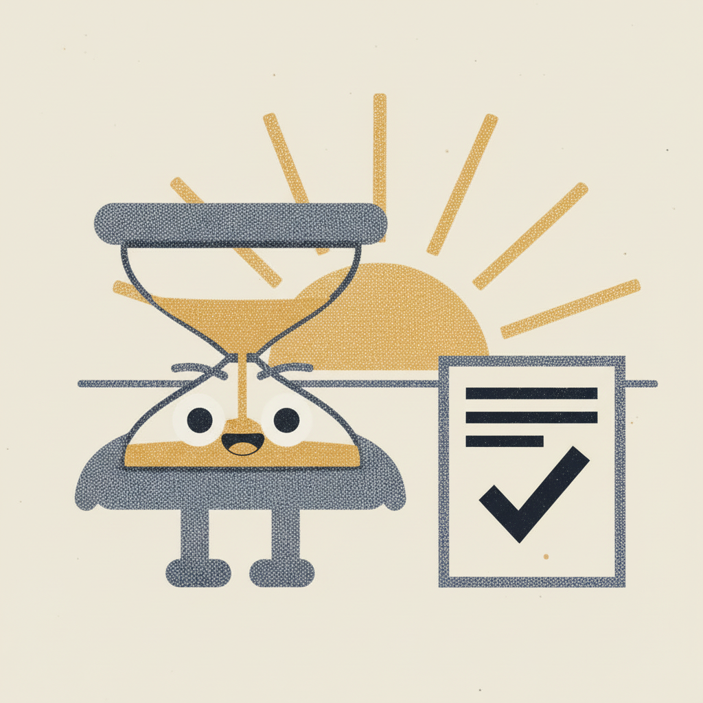
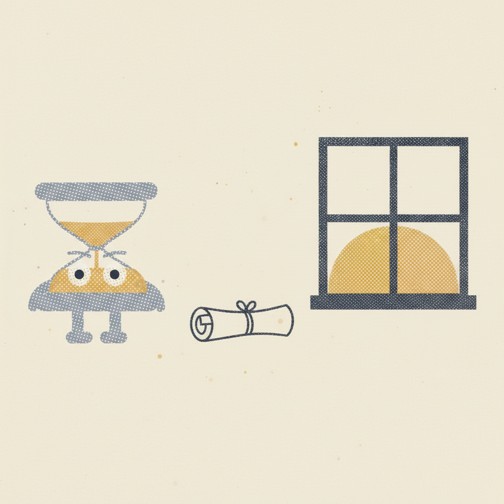
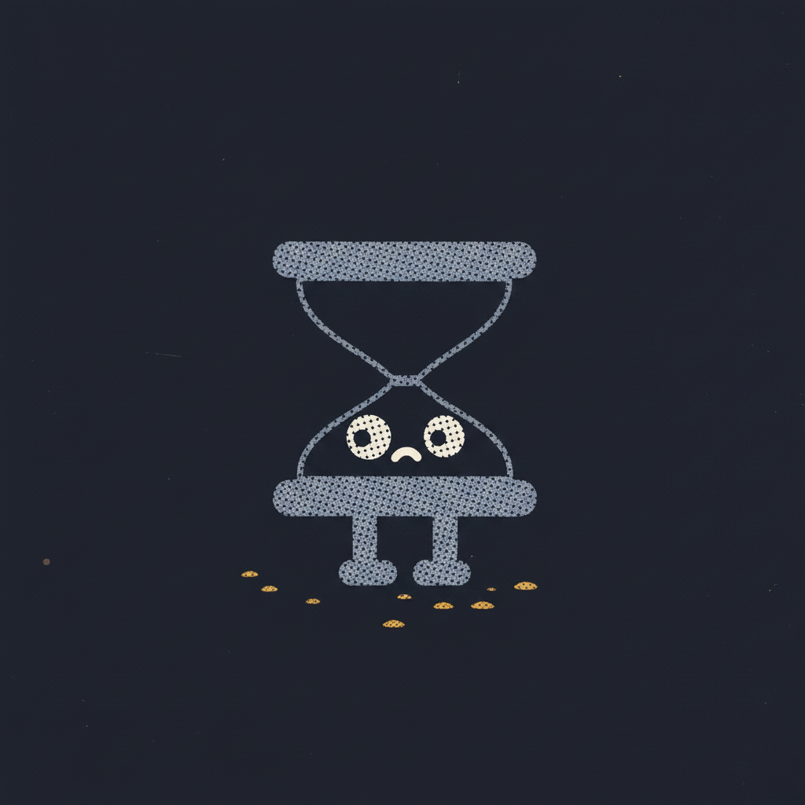
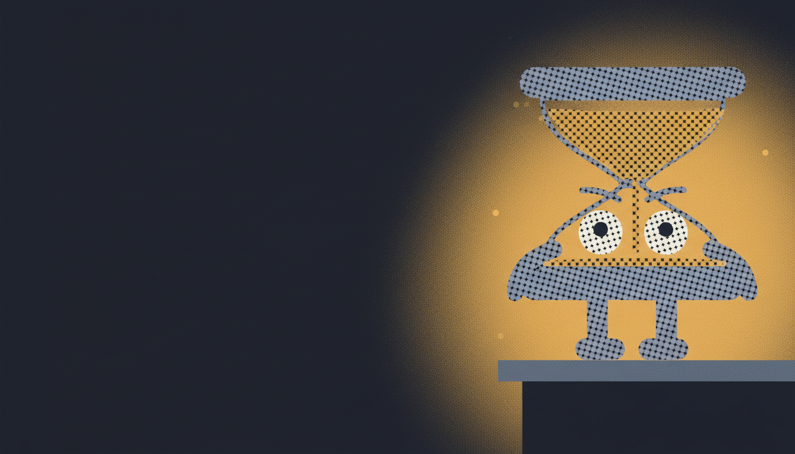
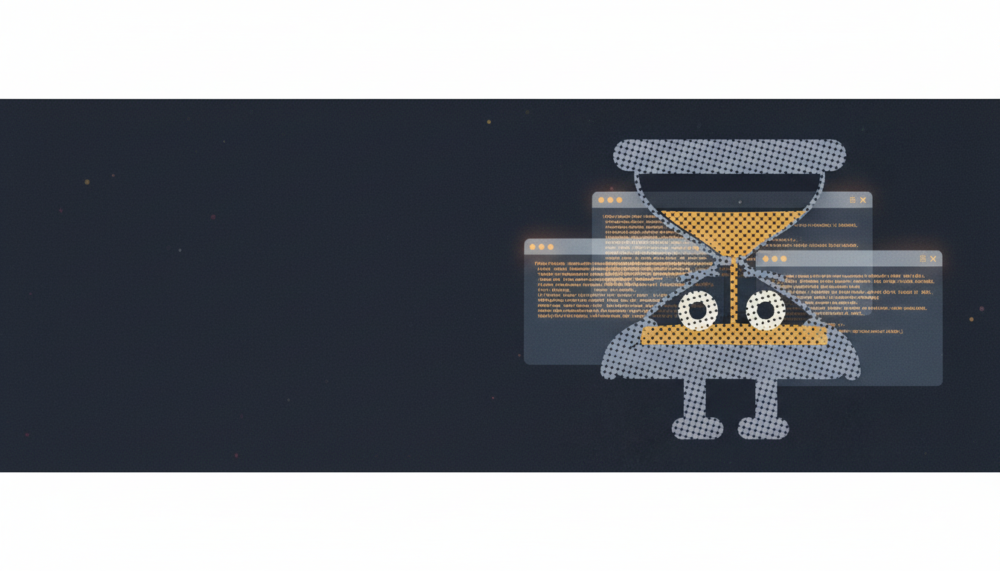
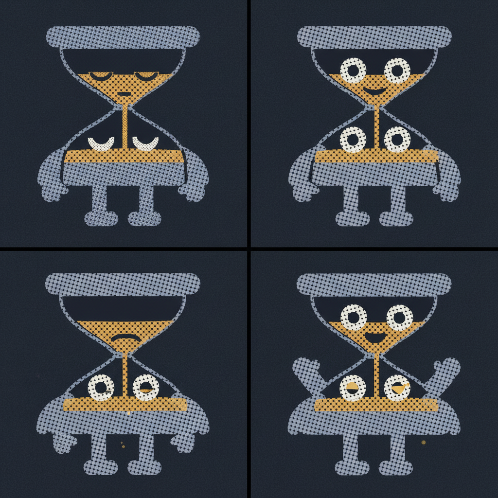
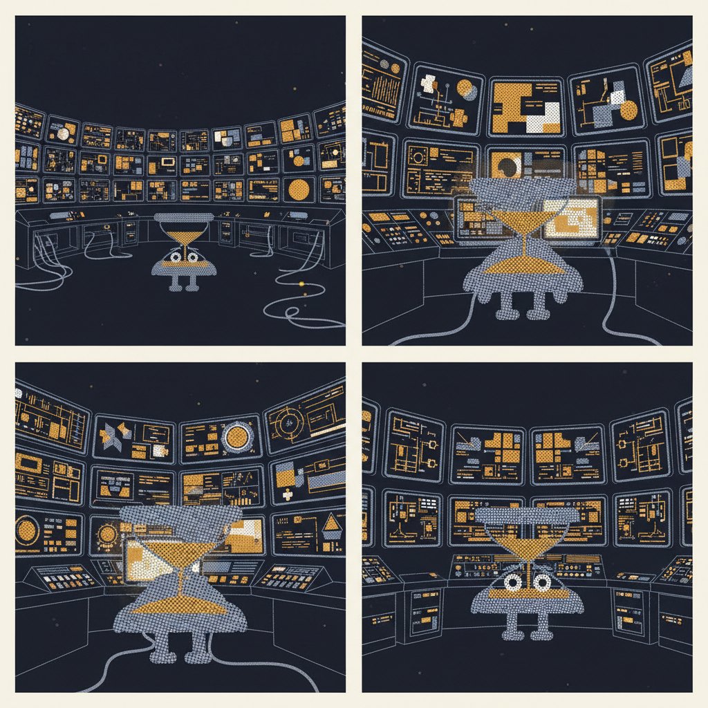
What Tock never does
- Never a colour outside the three inks. No gradients, no gloss, no drop shadows, no 3D.
- Never stretched, skewed, outlined, or rotated — except the 180° flip, which means a rework round.
- Never given a mouth. Eyes, lids and brows carry everything.
- Never cheerful about being awake at 3am. Competent and tired, not excited.
- Never a loading spinner. He is a character, not a progress indicator.
- Minimum halftone size 96px; below 32px use
favicon.svg.